Setup

Questo capitolo guiderà attraverso la configurazione dei modelli Raspberry Pi Zero 2 W (Raspi-Zero) e Raspberry Pi 5 (Raspi-5). Tratteremo la configurazione hardware, l’installazione del sistema operativo, la configurazione iniziale e i test.
Le istruzioni generali per Raspi-5 si applicano anche alle versioni più vecchie di Raspberry Pi, come Raspi-3 e Raspi-4.
Panoramica
Il Raspberry Pi è un potente e versatile computer a scheda singola che è diventato uno strumento essenziale per gli ingegneri di varie discipline. Sviluppati dalla Raspberry Pi Foundation, questi dispositivi compatti offrono una combinazione unica di convenienza, potenza di calcolo e ampie capacità GPIO (General Purpose Input/Output), rendendoli ideali per la prototipazione, lo sviluppo di sistemi embedded e progetti di ingegneria avanzata.
Caratteristiche Principali
Potenza di Calcolo: Nonostante le dimensioni ridotte, Raspberry Pi offre notevoli capacità di elaborazione, con gli ultimi modelli dotati di processori ARM multi-core e fino a 8 GB di RAM.
Interfaccia GPIO: L’header GPIO a 40 pin consente l’interazione diretta con sensori, attuatori e altri componenti elettronici, facilitando i progetti di integrazione hardware-software.
Ampia Connettività: Wi-Fi, Bluetooth, Ethernet e più porte USB integrate consentono diversi progetti di comunicazione e networking.
Accesso Hardware di Basso Livello: Raspberry Pi fornisce accesso a interfacce come I2C, SPI e UART, consentendo un controllo dettagliato e la comunicazione con dispositivi esterni.
Capacità in Tempo Reale: Con una configurazione appropriata, Raspberry Pi può essere utilizzato per applicazioni soft in tempo reale, rendendolo adatto per sistemi di controllo e attività di elaborazione del segnale.
Efficienza Energetica: Il basso consumo energetico consente progetti alimentati a batteria e a basso consumo energetico, in particolare in modelli come Pi Zero.
Modelli Raspberry Pi (trattati in questo libro)
- Raspberry Pi Zero 2 W (Raspi-Zero):
- Ideale per: sistemi embedded compatti
- Specifiche principali: CPU single-core da 1 GHz (ARM Cortex-A53), 512 MB di RAM, consumo energetico minimo
- Raspberry Pi 5 (Raspi-5):
- Ideale per: applicazioni più esigenti come edge computing, computer vision e applicazioni edgeAI, inclusi LLM.
- Specifiche principali: CPU quad-core da 2,4 GHz (ARM Cortex A-76), fino a 8 GB di RAM, interfaccia PCIe per espansioni
Applicazioni di Ingegneria
Progettazione di Sistemi Embedded: Sviluppo e prototipi di sistemi embedded per applicazioni reali.
IoT e Dispositivi in Rete: Creazione di dispositivi interconnessi ed esplorazione di protocolli come MQTT, CoAP e HTTP/HTTPS.
Sistemi di Controllo: Implementazione di loop di controllo feedback, controller PID e interfaccia per attuatori.
Visione Artificiale e IA: Utilizzo di librerie come OpenCV e TensorFlow Lite per l’elaborazione delle immagini e l’apprendimento automatico in edge.
Acquisizione e Analisi dei Dati: Raccolta dati dei sensori, analisi in tempo reale e creazione di sistemi di registrazione dei dati.
Robotica: Creazione di controller per robot, algoritmi di pianificazione del movimento e interfaccie con driver di motori.
Elaborazione del Segnale: Analisi del segnale in tempo reale, filtraggio e applicazioni DSP.
Sicurezza di Rete: Imposta VPN, firewall ed esplora i test di penetrazione della rete.
Questo tutorial guiderà nell’impostazione dei modelli Raspberry Pi più comuni, consentendo di iniziare rapidamente il progetto di apprendimento automatico. Tratteremo la configurazione hardware, l’installazione del sistema operativo e la configurazione iniziale, concentrandoci sulla preparazione del Pi per le applicazioni di apprendimento automatico.
Panoramica Hardware
Raspberry Pi Zero 2W

- Processore: CPU Arm Cortex-A53 quad-core a 64 bit da 1 GHz
- RAM: SDRAM da 512 MB
- Wireless: LAN wireless 802.11 b/g/n da 2,4 GHz, Bluetooth 4.2, BLE
- Porte: Mini HDMI, micro USB OTG, connettore per fotocamera CSI-2
- Alimentazione: 5 V tramite porta micro USB
Raspberry Pi 5

- Processore:
- Pi 5: CPU Arm Cortex-A76 quad-core a 64 bit @ 2,4 GHz
- Pi 4: SoC Cortex-A72 quad-core (ARM v8) a 64 bit @ 1,5 GHz
- RAM: opzioni da 2 GB, 4 GB o 8 GB (8 GB consigliati per attività di IA)
- Wireless: Wireless 802.11ac dual-band, Bluetooth 5.0
- Porte: 2 porte micro HDMI, 2 porte USB 3.0, 2 porte USB 2.0, porta fotocamera CSI, porta display DSI
- Alimentazione: 5 V CC tramite connettore USB-C (3 A)
Nei laboratori, useremo nomi diversi per riferirci al Raspberry:
Raspi,Raspi-5,Raspi-Zero, ecc. Di solito, si usaRaspiquando le istruzioni o i commenti si applicano a tutti i modelli.
Installazione del Sistema Operativo
Il sistema operativo (SO)
Un sistema operativo (SO) è un software fondamentale che gestisce le risorse hardware e software del computer, fornendo servizi standard per i programmi per computer. È il software principale che gira su un computer, fungendo da intermediario tra hardware e software applicativo. Il SO gestisce la memoria, i processi, i driver dei dispositivi, i file e i protocolli di sicurezza del computer.
- Funzioni chiave:
- Gestione dei processi: Assegnazione del tempo della CPU a diversi programmi
- Gestione della memoria: Assegnazione e liberazione della memoria in base alle necessità
- Gestione del file system: Organizzazione e monitoraggio di file e directory
- Gestione dei dispositivi: Comunicazione con dispositivi hardware collegati
- Interfaccia utente: Fornitura di un modo per gli utenti di interagire con il computer
- Componenti:
- Kernel: Il nucleo del sistema operativo che gestisce le risorse hardware
- Shell: L’interfaccia utente per interagire con il sistema operativo
- File system: Organizzazione e gestione dell’archiviazione dei dati
- Device driver: Software che consente al sistema operativo di comunicare con l’hardware
Il Raspberry Pi esegue una versione specializzata di Linux progettata per sistemi embedded. Questo sistema operativo, in genere una variante di Debian chiamata Raspberry Pi OS (in precedenza Raspbian), è ottimizzato per l’architettura basata su ARM del Pi e per le risorse limitate.
L’ultima versione di Raspberry Pi OS è basata su Debian Bookworm.
Caratteristiche principali:
- Leggero: Progettato per funzionare in modo efficiente sull’hardware del Pi.
- Versatile: Supporta un’ampia gamma di applicazioni e linguaggi di programmazione.
- Open source: Consente la personalizzazione e i miglioramenti guidati dalla comunità.
- Supporto GPIO: Consente l’interazione con sensori e altri hardware tramite i pin del Pi.
- Aggiornamenti regolari: Costantemente migliorato per prestazioni e sicurezza.
Embedded Linux sul Raspberry Pi fornisce un sistema operativo completo in un pacchetto compatto, rendendolo ideale per progetti che vanno da semplici dispositivi IoT ad applicazioni di apprendimento automatico edge più complesse. La sua compatibilità con gli strumenti e le librerie Linux standard lo rende una potente piattaforma per lo sviluppo e la sperimentazione.
Installazione
Per usare Raspberry Pi, avremo bisogno di un sistema operativo. Di default, Raspberry Pi verifica la presenza di un sistema operativo su qualsiasi scheda SD inserita nello slot, quindi dovremmo installare un sistema operativo usando Raspberry Pi Imager.
Raspberry Pi Imager è uno strumento per scaricare e scrivere immagini su macOS, Windows e Linux. Include molte immagini di sistemi operativi popolari per Raspberry Pi. Useremo Imager anche per preconfigurare credenziali e impostazioni di accesso remoto.
Seguire i passaggi per installare il sistema operativo nel Raspi.
- Scaricare e installare Raspberry Pi Imager sul computer.
- Inserire una scheda microSD nel computer (si consiglia una scheda SD da 32 GB).
- Aprire Raspberry Pi Imager e selezionare il modello di Raspberry Pi.
- Scegliere il sistema operativo appropriato:
- For Raspi-Zero: Ad esempio, si può selezionare:
Raspberry Pi OS Lite (64-bit).

img Grazie alla ridotta SDRAM (512 MB), il sistema operativo consigliato per Raspi-Zero è la versione a 32 bit. Tuttavia, per eseguire alcuni modelli di apprendimento automatico, come YOLOv8 di Ultralitics, dovremmo usare la versione a 64 bit. Sebbene Raspi-Zero possa eseguire un desktop, sceglieremo la versione LITE (senza Desktop) per ridurre la RAM necessaria per il normale funzionamento.
- Per Raspi-5: possiamo selezionare la versione completa a 64 bit, che include un desktop:
Raspberry Pi OS (64-bit)
- For Raspi-Zero: Ad esempio, si può selezionare:
- Selezionare la scheda microSD come dispositivo di archiviazione.
- Cliccare su
Nexte poi sull’icona dell’ingranaggioper accedere alle opzioni avanzate. - Impostare hostname, nome utente e password di Raspi, configurare il WiFi e abilitare SSH (molto importante!)
- Scrivere l’immagine sulla scheda microSD.
Negli esempi qui, useremo nomi host diversi a seconda del dispositivo utilizzato: raspi, raspi-5, raspi-Zero, ecc. Sarebbe utile se lo si sostituisse con quello in uso.
Configurazione Iniziale
- Inserire la scheda microSD nel Raspberry Pi.
- Collegare l’alimentazione per avviare il Raspberry Pi.
- Attendere il completamento del processo di boot iniziale (potrebbero volerci alcuni minuti).
I comandi Linux più comuni da usare con Raspi si trovano qui o qui.
Accesso Remoto
Accesso SSH
Il modo più semplice per interagire con Raspi-Zero è tramite SSH (“Headless”). Si può usare un terminale (MAC/Linux), PuTTy (Windows) o qualsiasi altro.
Trovare l’indirizzo IP del Raspberry Pi (ad esempio, controllando il router).
Sul computer, aprire un terminale e connettersi tramite SSH:
ssh username@[raspberry_pi_ip_address]In alternativa, se non si ha l’indirizzo IP, si può provare quanto segue:
ssh username@hostname.localper esempio,
ssh mjrovai@rpi-5.local,ssh mjrovai@raspi.local, ecc.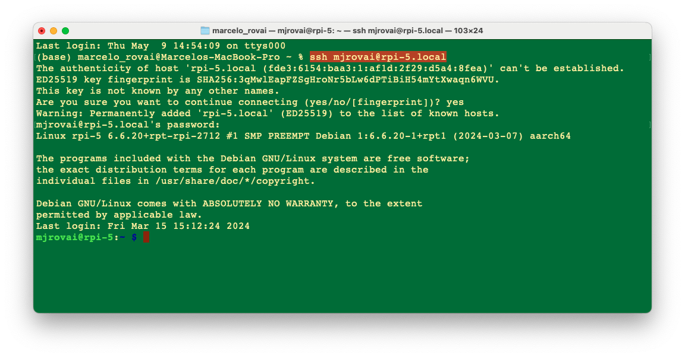
img Quando si vede il prompt:
mjrovai@rpi-5:~ $Significa che si sta interagendo da remoto con il Raspi. È una buona norma aggiornare/migliorare il sistema regolarmente. Per questo, si deve eseguire:
sudo apt-get update sudo apt upgradeSi deve confermare l’indirizzo IP Raspi. Sul terminale, si può usare:
hostname -I

Per spegnere il Raspi tramite terminale:
Per spegnere il Raspberry Pi, ci sono idee migliori che staccare semplicemente il cavo di alimentazione. Questo perché il Raspi potrebbe ancora scrivere dati sulla scheda SD, nel qual caso il semplice spegnimento potrebbe causare la perdita di dati o, peggio ancora, una scheda SD danneggiata.
Per uno spegnimento di sicurezza, usare la riga di comando:
sudo shutdown -h nowPer evitare possibili perdite di dati e danneggiamenti della scheda SD, prima di rimuovere l’alimentazione, si deve attendere qualche secondo dopo lo spegnimento affinché il LED del Raspberry Pi smetta di lampeggiare e si spenga. Una volta che il LED si spegne, è sicuro spegnere.
Trasferire file tra il Raspi e un computer
Il trasferimento di file tra il Raspi e il nostro computer principale può essere effettuato tramite una chiavetta USB, direttamente sul terminale (con scp) o un programma FTP sulla rete.
Utilizzo del Protocollo Secure Copy Protocol (scp):
Copiare i file sul Raspberry Pi
Creiamo un file di testo sul nostro computer, ad esempio, test.txt.

Si può usare qualsiasi editor di testo. Nello stesso terminale, un’opzione è
nano.
Per copiare il file test.txt dal personal computer alla cartella home di un utente sul Raspberry Pi, si esegue il seguente comando dalla directory contenente test.txt, sostituendo il segnaposto <username> con il nome utente che si usa per accedere al Raspberry Pi e il segnaposto <pi_ip_address> con l’indirizzo IP del Raspberry Pi:
$ scp test.txt <username>@<pi_ip_address>:~/Notare che
~/significa che sposteremo il file nella ROOT del Raspi. Si può scegliere qualsiasi cartella nel Raspi. Ma si deve creare la cartella prima di eseguirescp, poichéscpnon lo fa automaticamente.
Ad esempio, trasferiamo il file test.txt nella ROOT dell’Raspi-zero, che ha un IP di 192.168.4.210:
scp test.txt mjrovai@192.168.4.210:~/
Abbiamo usato un profilo diverso per differenziare i terminali. L’azione di cui sopra avviene sul computer. Ora, andiamo sul Raspi (utilizzando SSH) e controlliamo se il file è lì:
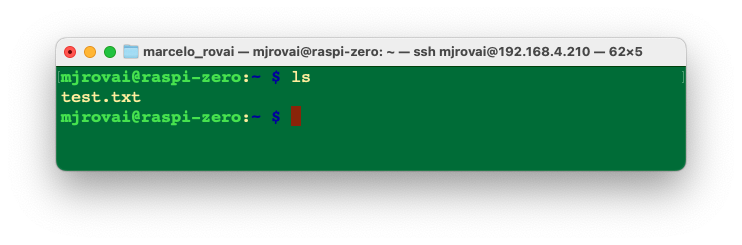
Copiare i file dal Raspberry Pi
Per copiare un file chiamato test.txt dalla directory home di un utente su un Raspberry Pi alla directory corrente su un altro computer, si esegue il seguente comando sul computer host:
$ scp <username>@<pi_ip_address>:myfile.txt .Per esempio:
Sul Raspi, creiamo una copia del file con un altro nome:
cp test.txt test_2.txtE sul computer host (in questo caso, un Mac)
scp mjrovai@192.168.4.210:test_2.txt .
Trasferimento di file tramite FTP
È anche possibile trasferire file tramite FTP, come FileZilla FTP Client. Seguire le istruzioni, installare il programma per il proprio sistema operativo desktop e usare l’indirizzo IP Raspi come Host. Per esempio:
sftp://192.168.4.210e inserire nome utente e password di Raspi . Premendo Quickconnect si apriranno due finestre, una per il desktop del computer host (destra) e un’altra per il Raspi (sinistra).
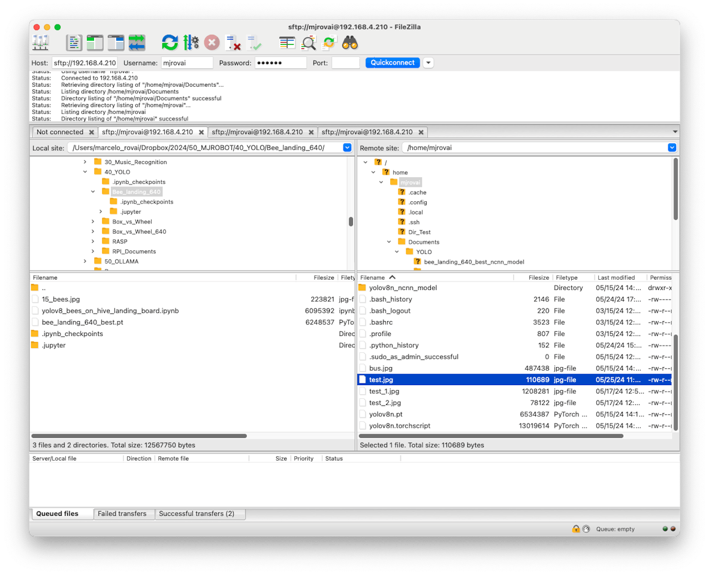
Aumentare la memoria SWAP
Utilizzando htop, un visualizzatore di processi interattivo multipiattaforma, si possono facilmente monitorare, in tempo reale, le risorse in esecuzione sul Raspi, come l’elenco dei processi, le CPU in esecuzione e la memoria utilizzata. Per lanciare hop, si immette il vomando sul terminale:
htop
Per quanto riguarda la memoria, tra i dispositivi della famiglia Raspberry Pi, il Raspi-Zero ha la quantità più piccola di SRAM (500 MB), rispetto a una selezione da 2 GB a 8 GB sui Raspi 4 o 5. Per qualsiasi Raspi, è possibile aumentare la memoria disponibile per il sistema con “Swap”. La memoria di swap, nota anche come spazio di swap, è una tecnica utilizzata nei sistemi operativi dei computer per archiviare temporaneamente i dati dalla RAM (Random Access Memory) sulla scheda SD quando la RAM fisica è completamente utilizzata. Ciò consente al sistema operativo (SO) di continuare a funzionare anche quando la RAM è piena, il che può prevenire crash o rallentamenti del sistema.
La memoria di swap avvantaggia i dispositivi con RAM limitata, come il Raspi-Zero. Aumentare lo swap può aiutare a eseguire applicazioni o processi più impegnativi, ma è essenziale bilanciare questo con il potenziale impatto sulle prestazioni dell’accesso frequente al disco.
Per default, la memoria SWAP (Swp) di Rapi-Zero è di soli 100 MB, il che è molto poco per l’esecuzione di alcune applicazioni di apprendimento automatico più complesse ed esigenti (ad esempio, YOLO). Aumentiamola a 2 MB:
Per prima cosa, si disattiva lo swap-file:
sudo dphys-swapfile swapoffPoi, si deve aprire e modificare il file /etc/dphys-swapfile. Per farlo, useremo nano:
sudo nano /etc/dphys-swapfileCercare la variabile CONF_SWAPSIZE (il valore predefinito è 200) e aggiornarla a 2000:
CONF_SWAPSIZE=2000E salvare il file.
Quindi, riattivare lo swapfile e riavviare Raspi-zero:
sudo dphys-swapfile setup
sudo dphys-swapfile swapon
sudo rebootQuando il dispositivo viene riavviato (so deve entrare di nuovo con SSH), ci si accorgerà che il valore massimo della memoria di swap mostrato in alto è ora qualcosa come 2 GB (nel nostro caso, 1.95 GB).
Per mantenere in esecuzione htop, si deve aprire un’altra finestra del terminale per interagire continuamente con il Raspi.
Installazione di una Fotocamera
Il Raspi è un dispositivo eccellente per applicazioni di visione artificiale; è necessaria una fotocamera. Possiamo installare una webcam USB standard sulla porta micro-USB utilizzando un adattatore USB OTG (Raspi-Zero e Raspi-5) oppure un modulo telecamera collegato alla porta Raspi CSI (Camera Serial Interface).
Le webcam USB hanno generalmente una qualità inferiore rispetto ai moduli fotocamera che si collegano alla porta CSI. Inoltre, non possono essere controllate utilizzando i comandi
raspistilleraspividnel terminale o il pacchetto di registrazionepicamerain Python. Tuttavia, potrebbero esserci dei motivi per collegare una telecamera USB al Raspberry Pi, ad esempio perché è molto più facile configurare più telecamere con un singolo Raspberry Pi, cavi lunghi o semplicemente perché si ha una telecamera del genere a portata di mano.
Installazione di una Webcam USB
- Spegnere il Raspi:
sudo shutdown -h no- Collegare la webcam USB (modulo telecamera USB 30fps,1280x720) al Raspi (in questo esempio, si usa il Raspi-Zero, ma le istruzioni funzionano per tutti i Raspi).

- Riaccendere ed eseguire SSH
- Per verificare che la fotocamera USB è riconosciuta, eseguire:
lsusbSi dovrebbe vedere la fotocamera elencata nell’output.
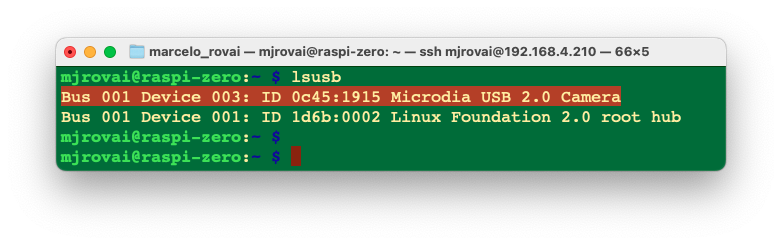
- Per scattare una foto di prova con la fotocamera USB, si usa:
fswebcam test_image.jpgQuesto salverà un’immagine denominata “test_image.jpg” nella directory corrente.
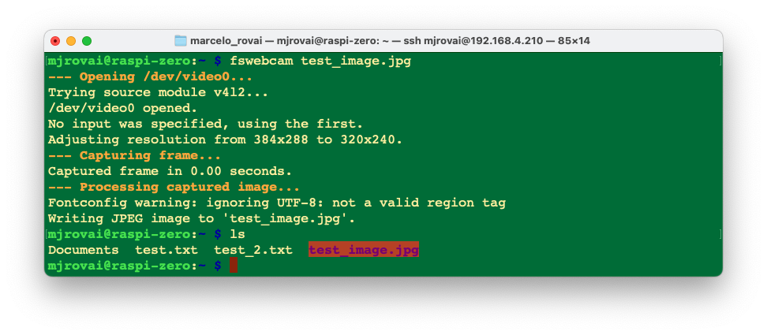
- Dato che stiamo usando SSH per connetterci al Rapsi, dobbiamo trasferire l’immagine al computer principale in modo da poterla visualizzare. Possiamo usare FileZilla o SCP per questo:
Si apre un terminale sul computer host e si esegue:
scp mjrovai@raspi-zero.local:~/test_image.jpg .Sostituire “mjrovai” col nome utente e “raspi-zero” con il nome host di Pi.

- Se la qualità dell’immagine non è soddisfacente, si possono regolare varie impostazioni; ad esempio, definire una risoluzione adatta a YOLO (640x640):
fswebcam -r 640x640 --no-banner test_image_yolo.jpgQuesto cattura un’immagine ad alta risoluzione senza il banner di default.
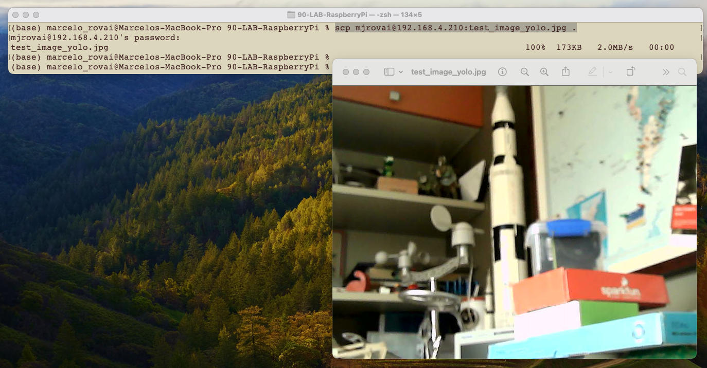
Si può anche usare una normale webcam USB:

Verificandola con lsusb
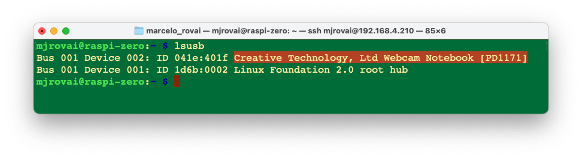
Streaming Video
Per lo streaming video (che richiede più risorse), possiamo installare e usare mjpg-streamer:
Per prima cosa, si installa Git:
sudo apt install gitOra, dovremmo installare le dipendenze necessarie per mjpg-streamer, clonare il repository e procedere con l’installazione:
sudo apt install cmake libjpeg62-turbo-dev
git clone https://github.com/jacksonliam/mjpg-streamer.git
cd mjpg-streamer/mjpg-streamer-experimental
make
sudo make installQuindi avviare lo streaming con:
mjpg_streamer -i "input_uvc.so" -o "output_http.so -w ./www"Possiamo poi accedere allo streaming aprendo un browser Web e andando su:
http://<your_pi_ip_address>:8080. In questo caso: http://192.168.4.210:8080
Dovremmo vedere una pagina web con opzioni per visualizzare lo stream. Cliccare suk che dice “Stream” o provare ad accedere a:
http://<raspberry_pi_ip_address>:8080/?action=stream
Installazione di un Modulo Fotocamera sulla porta CSI
Ora ci sono diversi moduli fotocamera Raspberry Pi. Il modello originale da 5 megapixel è stato rilasciato nel 2013, seguito da un 8-megapixel Camera Module 2 che è stato rilasciato nel 2016. L’ultimo modello di fotocamera è il 12-megapixel Camera Module 3, rilasciato nel 2023.
La fotocamera originale da 5 MP (Arducam OV5647) non è più disponibile da Raspberry Pi, ma può essere trovata da diversi fornitori alternativi. Di seguito è riportato un esempio di tale fotocamera su un Raspi-Zero.
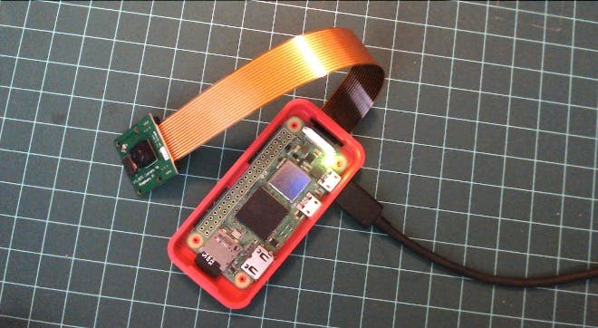
Ecco un altro esempio di un modulo fotocamera v2, dotato di un sensore Sony IMX219 da 8 megapixel:

Qualsiasi modulo fotocamera funzionerà sul Raspberry Pi, ma per questo è necessario aggiornare il file configuration.txt:
sudo nano /boot/firmware/config.txtIn fondo al file, ad esempio, per usare la fotocamera Arducam OV5647 da 5 MP, si deve aggiungere la riga:
dtoverlay=ov5647,cam0Oppure per il modulo v2, che ha la fotocamera Sony IMX219 da 8 MP:
dtoverlay=imx219,cam0Salvare il file (CTRL+O [INVIO] CRTL+X) e riavviare il Raspi:
Sudo rebootDopo l’avvio, si può vedere se la fotocamera è elencata:
libcamera-hello --list-cameras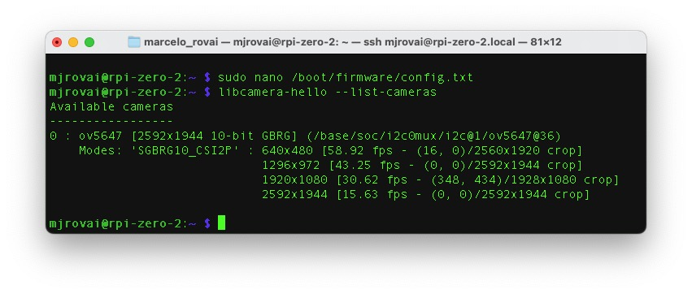
libcamera è una libreria software open source che supporta i sistemi di telecamere direttamente dal sistema operativo Linux sui processori Arm. Riduce al minimo il codice proprietario in esecuzione sulla GPU Broadcom.
Catturiamo un’immagine jpeg con una risoluzione di 640 x 480 per il test e salviamola in un file denominato test_cli_camera.jpg
rpicam-jpeg --output test_cli_camera.jpg --width 640 --height 480se vogliamo vedere il file salvato, dovremmo usare ls -f, che elenca tutto il contenuto della directory corrente in formato lungo. Come prima, possiamo usare scp per visualizzare l’immagine:

Esecuzione del desktop Raspi da remoto
Sebbene abbiamo interagito principalmente con il Raspberry Pi utilizzando comandi del terminale tramite SSH, possiamo accedere all’intero ambiente desktop grafico da remoto se abbiamo installato il sistema operativo Raspberry Pi completo (ad esempio, Raspberry Pi OS (64-bit). Questo può essere particolarmente utile per le attività che traggono vantaggio da un’interfaccia visuale. Per abilitare questa funzionalità, dobbiamo configurare un server VNC (Virtual Network Computing) sul Raspberry Pi. Ecco come fare:
Abilitare il server VNC:
- Connettersi al Raspberry Pi tramite SSH.
- Esegui lo strumento di configurazione Raspberry Pi immettendo:
bash sudo raspi-config - Andare su
Interface Optionsutilizzando i tasti freccia.
- Selezionare
VNCeYesper abilitare server VNC.
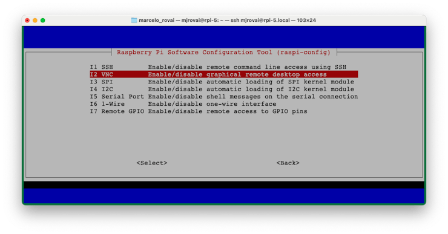
- Uscire dallo strumento di configurazione, salvando le modifiche quando richiesto.

Installare un VNC Viewer sul computer:
- Scaricare e installare un’applicazione di visualizzazione VNC sul computer principale. Le opzioni più diffuse includono RealVNC Viewer, TightVNC o VNC Viewer di RealVNC. Installeremo VNC Viewer di RealVNC.
Una volta installato, si deve confermare l’indirizzo IP Raspi. Ad esempio, sul terminale, si può usare:
hostname -I
Connettersi al Raspberry Pi:
- Aprire l’applicazione di visualizzazione VNC.

- Inserire l’indirizzo IP e il nome host del Raspberry Pi.
- Quando richiesto, inserire il nome utente e la password del Raspberry Pi.

Il Raspberry Pi 5 Desktop dovrebbe apparire sul monitor del computer.

Regolare le Impostazioni dello Schermo (se necessario):
- Una volta connessi, regolare la risoluzione dello schermo per una visualizzazione ottimale. Questo può essere fatto tramite le impostazioni desktop del Raspberry Pi o modificando il file config.txt.
- Facciamolo tramite le impostazioni desktop. Raggiungere il menù (l’icona Raspberry nell’angolo in alto a sinistra) e selezionare la migliore definizione dello schermo per il proprio monitor:
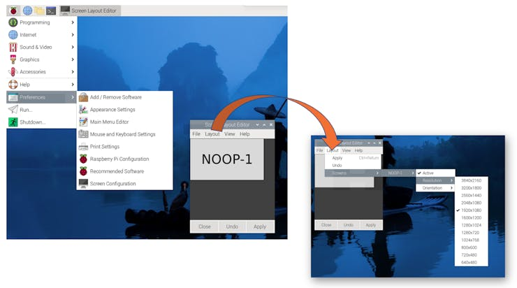
Aggiornamento e Installazione del Software
Aggiorna il sistema:
sudo apt update && sudo apt upgrade -yInstallare il software essenziale:
sudo apt install python3-pip -yAbilita pip per i progetti Python:
sudo rm /usr/lib/python3.11/EXTERNALLY-MANAGED
Considerazioni Specifiche del Modello
Raspberry Pi Zero (Raspi-Zero)
- Potenza di elaborazione limitata, ideale per progetti leggeri
- Per risparmiare risorse è meglio utilizzare una configurazione headless (SSH).
- Valutare l’aumento dello spazio di swap per attività che richiedono molta memoria.
- Può essere utilizzato per Image Classification e Object Detection Labs ma non per LLM (SLM).
Raspberry Pi 4 o 5 (Raspi-4 o Raspi-5)
- Adatto per progetti più impegnativi, tra cui IA e apprendimento automatico.
- Può eseguire l’intero ambiente desktop senza problemi.
- Raspi-4 può essere utilizzato per Image Classification e Object Detection Labs ma non funzionerà bene con LLM (SLM).
- Per Raspi-5, prendere in considerazione l’utilizzo di un dissipatore attivo per la gestione della temperatura durante attività intensive, come nel laboratorio LLM (SLM).
Ricordarsi di adattare i requisiti del progetto in base allo specifico modello di Raspberry Pi in uso. Raspi-Zero è ottimo per progetti a basso consumo e con vincoli di spazio, mentre i modelli Raspi-4 o 5 sono più adatti per attività più intensive dal punto di vista computazionale.